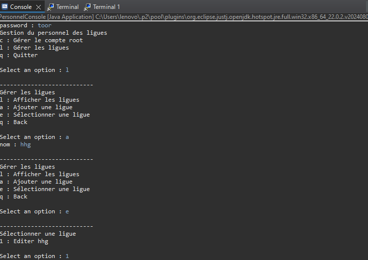
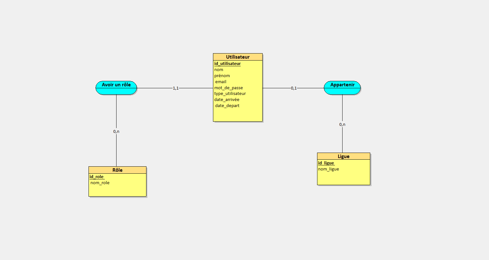

Gestion de Personnel
Ce projet consiste en une application de gestion de personnel permettant de gérer les employés, leurs informations et leurs dates d'arrivée et de départ. Il a été développé en Java avec une interface en ligne de commande et une base de données relationnelle.
Fonctionnalités principales
Gestion des Ligues
- Afficher toutes les ligues
- Ajouter une nouvelle ligue
- Sélectionner une ligue
- Renommer une ligue
- Supprimer une ligue
Gestion des Employés
- Afficher les employés d'une ligue
- Ajouter un nouvel employé (nom, prénom, mail, mot de passe, dates d'arrivée/départ)
- Sélectionner un employé
- Modifier un employé
- Supprimer un employé
Autres Fonctionnalités
- Gestion des administrateurs (affichage de l'administrateur d'une ligue).
- Interface en ligne de commande (CLI) pour une navigation simple.
Captures d'écran


Liens utiles
Technologies utilisées
- Langage : Java
- Base de données : MySQL
- Outils : Eclipse IDEA, Git, Maven
Conclusion
Ce projet a été une excellente opportunité pour approfondir mes compétences en Java et en gestion de bases de données. N'hésitez pas à explorer le code source et la documentation pour en savoir plus !